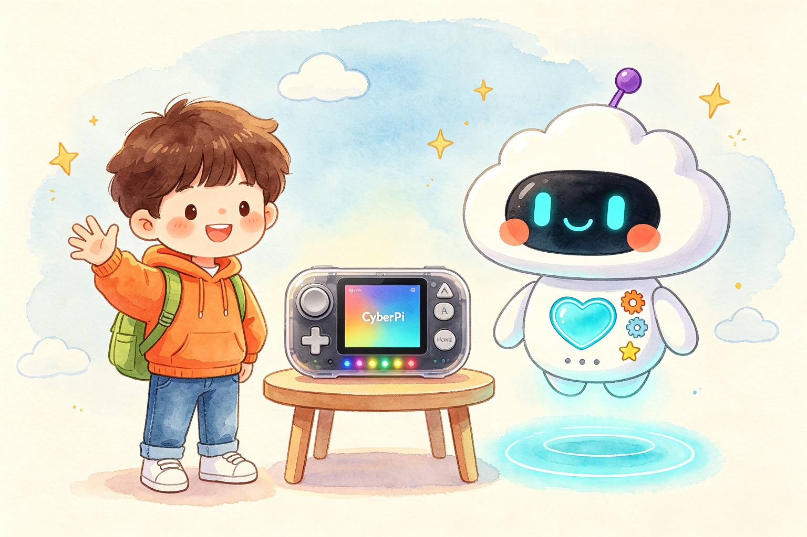
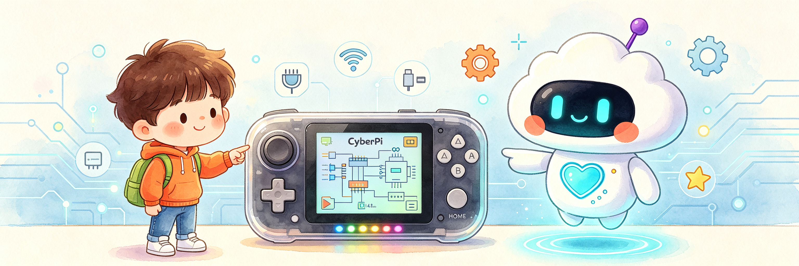

AI编程探险课 · CyberPi 智能编程套装：一台 CyberPi 真机，32 节递进课程，孩子用积木编程理解 AI 的逻辑，再把程序变成屏幕、灯光、声音和传感器上的真实反应。

本套装把编程学习和硬件验证连成闭环：每节课的程序，都立刻在 CyberPi 上跑起来。
CyberPi 是一台可编程的微型智能主机：全彩屏、五向摇杆、按键、麦克风、光线传感器、扬声器与 RGB 灯，程序结果看得见、听得到。
全部 32 课只需一台电脑、一条 Type-C 数据线，无需外接任何传感器，开箱即学，课堂部署零负担。
从“你好，CyberPi！”到 AI 语音识别与自动翻译机，顺序、事件、循环、条件、变量、运算、自制积木逐级进阶，最后完成毕业项目“我的 AI 小助手”。
不追热点、不玩概念：用孩子能上手的方式，理解信息、规则、数据、学习与责任，为未来真正接触 AI 打下基础。
“程序设计师”与“测试工程师”角色轮换，一人写程序、一人测效果，在协作中学会表达、倾听与改进。
32 课 96 道随堂问答、四大章节徽章、个人成长档案：孩子的每一步进步都有记录，完成 32 课即可获得毕业认证。
第 1–8 课
认识设备，理解顺序执行
第 9–16 课
事件驱动，循环重复执行
第 17–24 课
条件、变量、运算与自制积木
第 25–32 课
体感交互与 AI 综合项目
每一课都完成一个可运行的作品，用作品串联知识点。
屏幕、灯光、声音、光线、麦克风与陀螺仪——先让设备“活起来”。
按键、摇杆、变色灯与音乐——程序因为事件而启动，因为循环而持续。
声控灯、跳动的心、随机骰子与自制积木——程序开始“会思考”。
猜数字、计步器、语音识别、自动翻译机——AI 综合毕业项目。

集屏幕、输入、感知与输出于一体，专为儿童编程课堂设计。
团团和点点用故事情境提出本课要解决的问题，让孩子先想一想。
明确本课的编程目标与 AI 目标，学习有方向。
认识新积木，看懂完整程序的搭建方式。
在 mBlock 中拖拽积木，亲手完成本课作品。
上传到 CyberPi，观察真实效果并调试改进。
完成改造挑战与随堂问答，巩固知识、拓展创造。
可以。课程从第 1 课“你好，CyberPi！”开始，不要求任何编程基础；积木式编程只需拖拽拼接，6 岁孩子也能独立完成前几课。
不需要。除一台可联网的电脑外，仅需本套装包含的 CyberPi 主机与 Type-C 数据线；mBlock 慧编程软件免费，无需外接任何传感器。
每课 45–60 分钟，建议两人一组：一人当“程序设计师”，一人当“测试工程师”，每 10–15 分钟轮换，培养协作与表达。
普通课程以电脑动画为主要反馈；本课程的程序结果运行在真实硬件上——灯真的会亮、声音真的会响、摇杆真的能控制，同时通过联网课程带孩子初识语音识别、翻译等 AI 应用。
AI编程探险课 · CyberPi 智能编程套装，把编程、硬件与 AI 启蒙装进一个盒子。